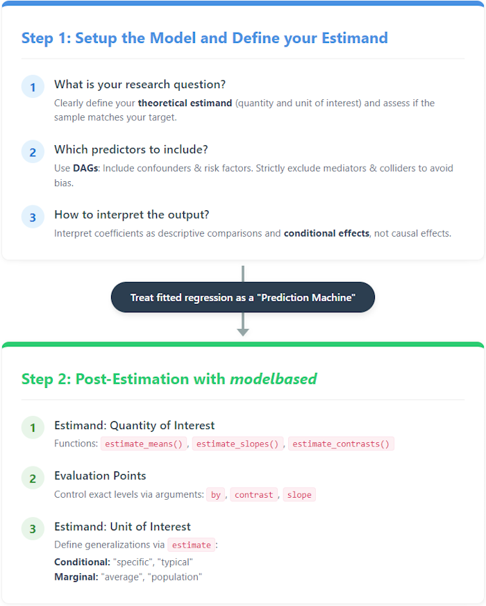
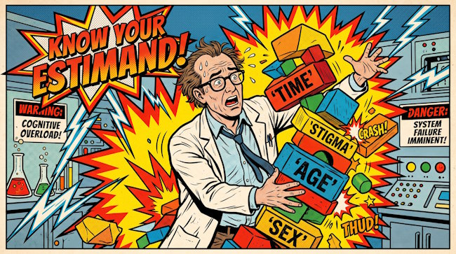
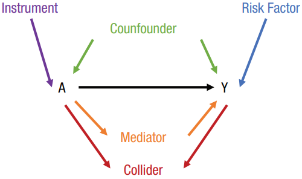
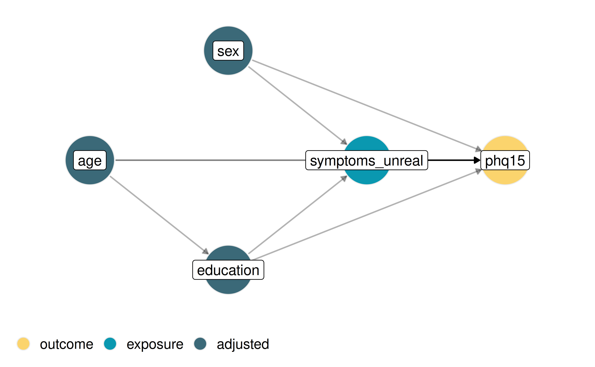
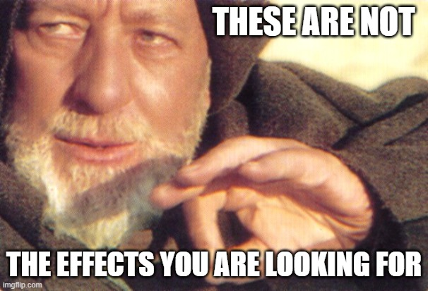
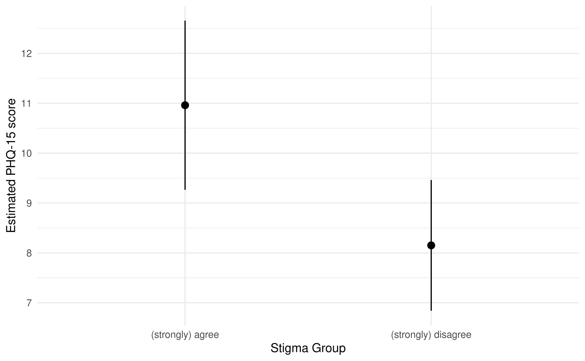
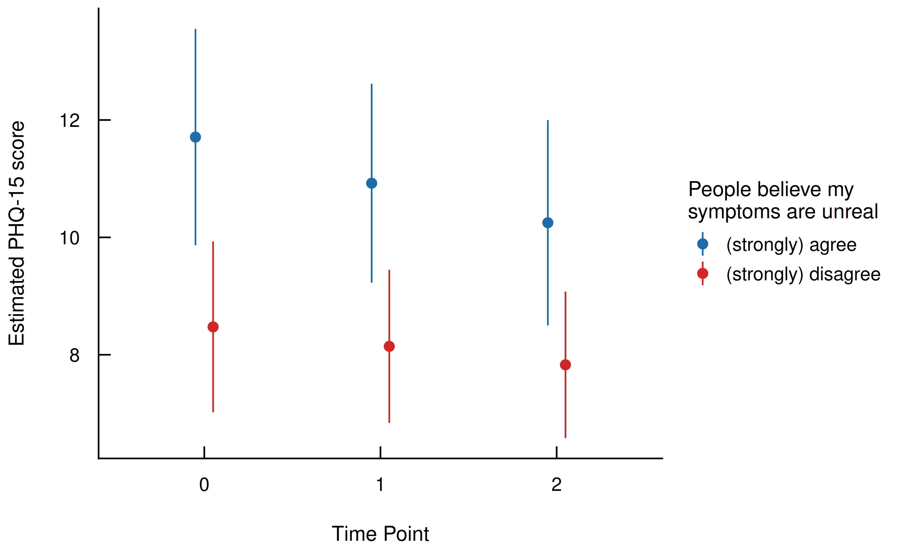
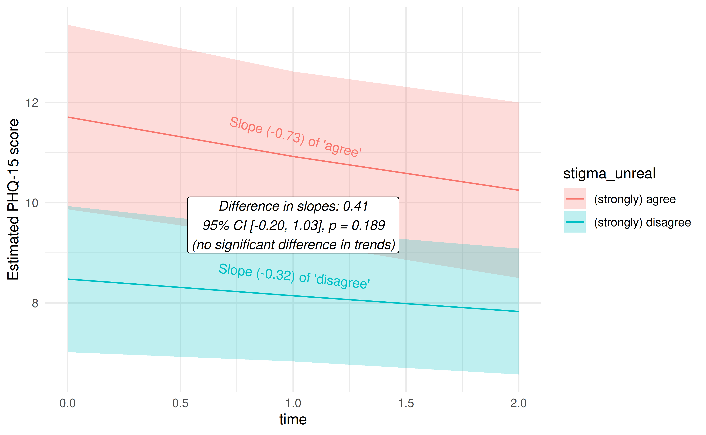
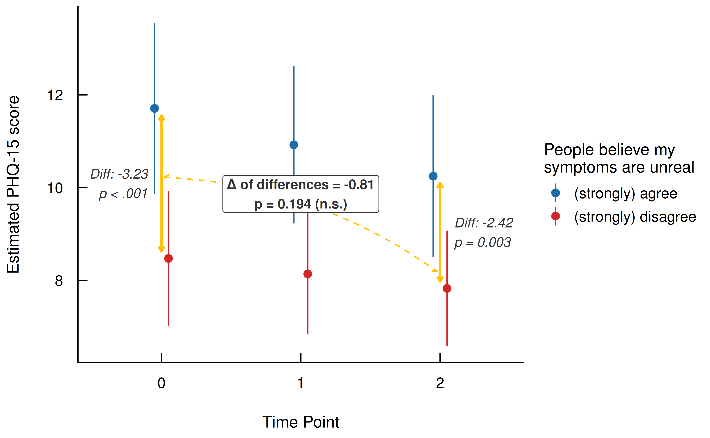
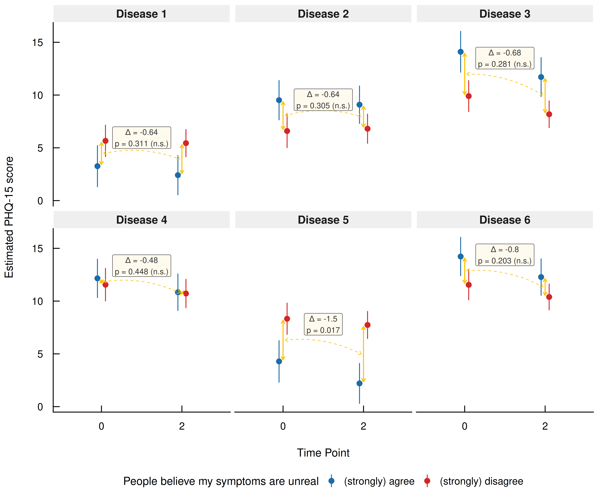

The Modelisation Approach: An Analytical Workflow with Integrated Post-Estimation Framework
Source:vignettes/post_estimation_framework.Rmd
post_estimation_framework.RmdCompleting the analytic workflow means understanding that fitting the model is just the beginning. Traditionally, researchers often stop at the regression table, trying to make sense of individual coefficients. However, interpreting coefficients directly can be highly confusing and error-prone, especially when dealing with complex models that include interactions or nonlinearities. Instead, we should treat our statistical models as (counterfactual) prediction machines (Rohrer and Arel-Bundock 2026).
L’Approche de Modélisation: One Model, Many Answers
By adopting this perspective, the modelbased package
helps you extract multiple insights from one comprehensive model.
Because there is rarely just a single “effect” of interest in any given
study, a single, well-built model can be repeatedly queried to estimate
various target quantities - such as predictions, comparisons, or slopes.
In this vignette, we will demonstrate this efficiency by using just one
model to answer five distinct, progressively complex research questions,
moving seamlessly from exploratory analysis to formal hypothesis
testing.
Some might take issue with the term prediction (or prediction machine), assuming it strictly implies forecasting future or unseen events. However, that is exactly the point: the mechanical estimation of parameters is already complete once the model is fitted. What follows are statements like, “based on our data and our model, we can predict this value as our expected outcome.”
In this model-agnostic framework, the word “prediction” is used generically to refer to the expected value of the outcome for a given set of predictor variables. It does not require a literal forecast of the future, as the everyday usage of the term might imply. Rather, this model-based expectation - or prediction - is simply the most basic statistical quantity that analysts can target in a regression context to answer substantive questions (Rohrer and Arel-Bundock 2026).
This vignette illustrates a two-step framework for statistical modeling, which we call the modelisation approach (derived from the French modélisation).
Setup the Model: The first step is to explicitly define the theoretical estimand, which is the specific target quantity that actually answers your research question. Once the goal is clear, we must carefully select predictors. This process is greatly aided by Directed Acyclic Graphs (DAGs), which allow us to map out the theoretical causal web and decide which variables must be included (like confounders) and which must be avoided (like colliders and mediators). Finally, we must recognize that standard regression coefficients usually just represent descriptive, conditional comparisons rather than direct causal effects.
Post-Estimation: With the model fitted, we step away from the mechanics of estimation and query our “prediction machine”. Utilizing
modelbasedfunctions, we interrogate the model using specific predictors of interest, define exact evaluation points, and specify target populations. This post-estimation process allows us to translate confusing coefficients into clear, substantive quantities that directly address our initial research questions.

Step 1: Setup the Model
Defining the Estimands: Five Questions, One Model
Before setting up any statistical model, researchers must explicitly spell out their theoretical estimands in precise terms. An estimand is the specific target quantity that directly answers the research question (Lundberg et al. 2021). Instead of passively interpreting whatever coefficients the software returns, we must actively decide whether our question requires us to estimate predictions, slopes, or comparisons (Rohrer and Arel-Bundock 2026; Rohrer and Murayama 2023).

“Just control for everything in the DAG”, they said. The cognitive overload of searching for an estimand without a clear post-estimation strategy
In this vignette, we will use a single model to target five distinct estimands:
- Predicted overall PHQ-15 scores: To answer how symptom severity differs between stigma groups, our target quantity relies on marginal predictions.
- Predicted PHQ-15 trajectories: To see how symptom severity evolves over time across groups, our estimand is again based on predictions, but this time evaluated across a specific grid of time and stigma levels to map out expected trajectories.
- Quantifying the change (trend) in PHQ-15 scores: To understand how strong the time trend is within each stigma group, our target quantity shifts to slopes. The estimand is the rate of change in symptoms over time for each specific group.
- Testing the interaction: Does the group gap change over time? To test if the gap between groups widens or narrows, our target quantity is an interaction contrast.
- Exploring Heterogeneity Across Clusters: Instead of averaging across the whole population, we calculate specific contrasts conditionally within higher-level clusters (the disease groups) to explore heterogeneity.
Once these target quantities are clearly defined, we can proceed to construct the mathematical model that will allow us to estimate them.
The estimand - quantity and unit of interests
Defining your estimand requires specifying both the quantity and the unit of interest. Thus, determining your target population (unit) - whether that is a specific individual, an average across individuals, or a broader population - is just as crucial as choosing between predictions, contrasts or slopes (quantity) (Lundberg et al. 2021; Rohrer and Arel-Bundock 2026).
In the modelbased package, this target population is
controlled via the estimate argument, which determines how
to marginalize over the non-focal predictors. Throughout this vignette,
we default to estimate = "average" to accurately reflect
the empirical distribution of our observed sample. Crucially, this
assumes that our sample adequately represents the underlying target
population.
However, if your estimand requires formal causal inference and
transferring results to other contexts, switching to
estimate = "population" allows you to evaluate true
counterfactual scenarios (see also the vignette
on marginalization methods).
Before we start, let’s load the necessary R packages.
Which predictors to include?
To answer our overarching research question - Does perceived stigmatization predict an increase in somatic symptom burden (PHQ-15)? - we must first determine the appropriate variables to include in our analysis. We use Directed Acyclic Graphs (DAGs) to visually map out the theoretical causal assumptions behind our data. This acts as a practical guide to determine which variables must be included (confounders) or may be included (risk factors) to prevent bias and increase precision. It also tells us which variables must strictly be excluded (mediators, colliders, and instrumental variables) to avoid overadjustment bias or bias amplification (see Figure 1, Chatton and Rohrer (2024)).
This is an often-neglected, yet crucial step in data analysis. Depending on your research question, it may be necessary to “control for a confounder” to reduce bias. However, in other situations, that exact same variable might act not as a confounder, but as a mediator - which dictates that it should be omitted from the model (Rohrer and Arel-Bundock 2026) (again, depending on your research question: if you are interested in direct or indirect effects, including a mediator can be meaningful, and a DAG will also help here to find the correct model).

Figure 1: Variable Roles in a Directed Acyclic Graph (DAG)
Here is the DAG checking the theoretical structure of our variables before proceeding to the actual modeling step. If we omitted a necessary confounder, or accidentally included a collider, this diagnostic check will alert us.
# Define and check the theoretical causal structure using a Directed Acyclic
# Graph (DAG). We specify our outcome, exposure, and the covariates we plan
# to adjust for.
dag <- check_dag(
phq15 ~ symptoms_unreal + sex + age + education,
symptoms_unreal ~ sex + age + education,
education ~ age,
outcome = "phq15",
exposure = "symptoms_unreal",
adjusted = ~ sex + age + education,
coords = ggdag::time_ordered_coords()
)
# Visualize the DAG to confirm our adjustment strategy
plot(dag, which = "current") + labs(title = NULL)
Figure 2: DAG of our theoretical causal assumptions
Building the Model
Guided by this causal structure, we can now build a statistical model
complex enough to capture our core theoretical assumptions. The global
research question is whether perceived stigma predicts the trajectory of
somatic symptom burden (PHQ-15) over time. We fit a linear mixed model
for hierarchical, longitudinal data predicting phq15 using
an interaction between symptoms_unreal and
time. The focal predictor, symptoms_unreal,
measures perceived stigma related to somatic symptoms by asking
participants how much they agree with the statement, “People believe
that my symptoms are not a real illness” (with responses ranging
from strongly disagree to strongly agree, excluding a
residual category of patients without complaints). Following the DAG, we
adjust for the necessary covariates, and we include random intercepts
for baseline differences and random slopes to allow the time trend to
vary by patient and disease group.
Click to show code for data generation
# Load the example dataset 'stigma' from the modelbased package
# This is a toy-dataset with simulated data
data(stigma, package = "modelbased")
# Shift the 'time' variable so that the baseline starts at 0 instead of 1
stigma$time <- slide(stigma$time3)
# Recode the stigma variable to combine levels into a binary-like
# structure for simplicity
stigma$symptoms_unreal <- recode_into(
symptoms_unreal %in%
c("strongly disagree", "disagree") ~ "(strongly) disagree",
symptoms_unreal %in%
c("strongly agree", "agree") ~ "(strongly) agree",
data = stigma
)
# Define priors for the mixed model - without priors,
# the model yields convergence warnings
prior <- data.frame(
prior = c("normal(0, 10)", "gamma(1, 2.5)"),
class = c("fixef", "ranef")
)
# Set a global clean theme for all subsequent plots
set_theme(theme_modern(show.ticks = TRUE, base_size = 10))
# Fit a linear mixed-effects model using glmmTMB: We predict 'phq15' based on
# the interaction of stigma and time, plus several covariates. Random effects
# include random intercepts and slopes for time across disease groups and
# patients.
model <- glmmTMB(
phq15 ~ symptoms_unreal *
time +
sex +
age_z +
education +
(1 + time | disease_group / ID),
priors = prior,
data = stigma
)Interpreting the output
When looking at the standard regression table, it is crucial to interpret these coefficients as descriptive comparisons. Specifically, coefficients generally represent conditional effects, meaning they describe an association while strictly holding all other covariates constant (Gelman et al. (2020); Chapter 6.3), i.e., comparing individuals who are identical regarding these characteristics.
result <- model_parameters(model, effects = "fixed")
display(
result,
caption = "Regression Coefficients from Linear Mixed Model (only fixed effects shown)"
)| Parameter | Coefficient | SE | 95% CI | z | p |
|---|---|---|---|---|---|
| (Intercept) | 8.61 | 1.10 | (6.46, 10.76) | 7.85 | < .001 |
| symptoms unreal ((strongly) disagree) | -1.36 | 0.77 | (-2.87, 0.15) | -1.76 | 0.079 |
| time | -0.69 | 0.30 | (-1.28, -0.10) | -2.27 | 0.023 |
| sex (female) | 2.70 | 0.68 | (1.37, 4.03) | 3.98 | < .001 |
| age z | -0.07 | 0.33 | (-0.73, 0.58) | -0.21 | 0.832 |
| education (linear) | -0.99 | 0.67 | (-2.31, 0.32) | -1.48 | 0.139 |
| education (quadratic) | -0.20 | 0.50 | (-1.17, 0.77) | -0.40 | 0.690 |
| symptoms unreal ((strongly) disagree) × time | 0.34 | 0.31 | (-0.28, 0.95) | 1.08 | 0.281 |
The Interpretation Trap
The “interpretation trap” occurs when researchers forget that regression coefficients must be interpreted conditionally - meaning they only compare individuals who share the exact same characteristics across all other variables.
Categorical Predictors: Estimates are interpreted relative to a baseline reference category. For instance, the coefficient for
symptoms_unreal ((strongly) disagree)is -1.36. This indicates that, holdingtime,sex,age, and all other covariates constant, patients who disagree that their symptoms are “unreal” score 1.36 points lower on the PHQ-15 than those in the implicit reference category (who agree).Continuous Predictors: Estimates reflect the expected change associated with a one-unit increase in the predictor. The
timecoefficient of -0.69 suggests a 0.69-point decrease in PHQ-15 scores for every single unit of time passed, again, assuming all other variables are held constant.

The Cognitive Overload of Conditional Effects
Because our model includes an interaction
(symptoms_unreal * time), interpreting these individual
coefficients becomes highly confusing. The “main effect” coefficients in
the table only apply when the interacting variable is at its reference
level (e.g., at time = 0). Focusing solely on these
isolated numbers can quickly lead to incomplete or erroneous
conclusions.
This is exactly why we need to move beyond the regression table. To draw valid conclusions, we must transition to Step 2 and extract meaningful answers through post-estimation.
Up to this point, we have focused on the relatively straightforward case of linear models. Moving to generalized linear models, such as logistic regression, makes interpreting raw coefficients even more complex.
This is where the modelisation approach truly shines: by utilizing
the modelbased package, we bypass these difficulties and
generate intuitive, real-world quantities instead. In the case of
logistic regression, for example, we can directly estimate the predicted
probability of an outcome event. Probabilities are vastly easier to
communicate and understand than confusing - and often misinterpreted -
odds ratios.
Step 2: Post-Estimation with modelbased
Now we query our model using the core functions of the
modelbased toolkit: estimate_means(),
estimate_slopes(), and estimate_contrasts().
We evaluate specific target populations using the
estimate = "average" argument, which calculates predictions
using the actual empirical distribution of covariates in our sample
before averaging the results (see also the vignette
on marginalization methods for technical details and the meaning of
other options for the estimate argument).
Predicted overall PHQ-15 scores: Comparing stigma groups
First, we ask: How does symptom severity differ between stigma
groups? We use estimate_means() to calculate the marginal
means for each stigma group, comparing their overall average score. By
doing so, we target our first estimand - marginal predictions - which
allows us to see the expected outcome for these groups while
standardizing the distribution of all other covariates in our
sample.
# Calculate overall marginal means for each stigma group. Using
# estimate = "average" computes predictions based on the actual sample
# distribution
emm <- estimate_means(
model,
by = "symptoms_unreal",
estimate = "average"
)Click to show code for plot generation

Figure 3: Estimated Marginal Means of PHQ-15 by Stigma Groups
Predicted PHQ-15 trajectories
Next, we ask: How does symptom severity evolve over time across different stigma groups? We evaluate the interaction between time and stigma group by estimating predictions across specific values. This maps out the expected trajectories, transforming the model’s complex interaction coefficients into an intuitive visual format that directly answers our second question.
# Calculate marginal means for the interaction
# between time and stigma group
emm <- estimate_means(
model,
by = c("time", "symptoms_unreal"),
estimate = "average"
)Click to show code for plot generation
# Plot the estimated trajectories over time
result <- plot(emm) +
labs(
title = NULL,
x = "Time Point",
y = "Estimated PHQ-15 score",
colour = "People believe my\nsymptoms are unreal"
) +
scale_color_see()
Figure 4: Estimated Marginal Means of PHQ-15 by Stigma Groups Across Time
Quantifying the change (trend) in PHQ-15 scores
How strong is the time trend in symptom severity within each stigma
group? We use estimate_slopes() to calculate the average
linear slope of the PHQ-15 score per time unit, shifting our targeted
estimand to the rate of change.
We can then formally test if this rate of change depends on stigma by
running estimate_contrasts() to see whether the difference
between the two slopes is significantly different from zero. We set
integer_as_continuous = TRUE so that numeric predictors
with few unique values are correctly treated for slope contrasts.
# Estimate the linear trend (slope) of PHQ-15 scores
# over time for each stigma group
slopes <- estimate_slopes(
model,
slope = "time",
by = "symptoms_unreal",
estimate = "average"
)
# Test if the difference between the two slopes is
# statistically significant. 'integer_as_continuous = TRUE'
# ensures the 3 time points are treated as a continuous trend
contrast1 <- estimate_contrasts(
model,
contrast = "time",
by = "symptoms_unreal",
integer_as_continuous = TRUE,
estimate = "average"
)Click to show code for plot generation
# Create a dataframe to hold custom annotations for the slopes in the plot
anno_slopes <- data.frame(
symptoms_unreal = c("(strongly) agree", "(strongly) disagree"),
x_pos = c(1, 1),
y_pos = c(emm$Mean[3] + 0.2, emm$Mean[4] + 0.2),
angle = c(slopes$Slope[1] * 19, slopes$Slope[2] * 19),
label = c(
paste0("Slope (", round(slopes$Slope[1], 2), ") of 'agree'"),
paste0("Slope (", round(slopes$Slope[2], 2), ") of 'disagree'")
)
)
# Plot the trends and overlay the statistical test results
result <- plot(emm, numeric_as_discrete = FALSE) +
labs(
title = NULL,
x = "Time Point",
y = "Estimated PHQ-15 score",
colour = "People believe my\nsymptoms are unreal",
fill = "People believe my\nsymptoms are unreal"
) +
annotate(
"label",
x = 1,
y = mean(emm$Mean),
label = paste0(
"Difference in slopes: ",
round(contrast1$Difference, 2),
"\n95% CI ",
insight::format_ci(contrast1),
", ",
insight::format_p(contrast1$p),
if (contrast1$p >= 0.05) "\n(no significant difference in trends)"
),
size = 3.5,
fill = "white",
fontface = "italic"
) +
geom_text(
data = anno_slopes,
mapping = aes(
x = x_pos,
y = y_pos,
label = label,
angle = angle,
color = symptoms_unreal
),
vjust = -0.5,
size = 3.5,
show.legend = FALSE
) +
scale_color_see() +
scale_fill_see()
Figure 5: Comparison of Trends in PHQ-15 by Stigma Groups
Testing the interaction: Does the group gap change over time?
Is there a significant gap between the groups at specific measurement points, and does this gap change? We can run an interaction contrast to test whether the group difference at time point 0 differs significantly from the difference at time point 2. This targets our fourth estimand - a comparison of comparisons - allowing us to formally test if the initial gap between the stigma groups significantly widens or narrows by the end of the study.
# Calculate simple contrasts between stigma groups
# at specific time points
contrast2 <- estimate_contrasts(
model,
contrast = "symptoms_unreal",
by = "time=c(0,2)",
estimate = "average"
)
# Calculate interaction contrasts: Does the group gap at
# time 0 differ from the gap at time 2? We specify a custom
# comparison: (Group 1 at T0 - Group 2 at T0) vs
# (Group 1 at T2 - Group 2 at T2)
contrast3 <- estimate_contrasts(
model,
contrast = c("time", "symptoms_unreal"),
comparison = "(b1 - b4) = (b3 - b6)",
estimate = "average"
)Click to show code for plot generation
# Re-create the base plot and add annotations highlighting the differences
# at specific time points
result <- plot(emm) +
labs(
title = NULL,
x = "Time Point",
y = "Estimated PHQ-15 score",
colour = "People believe my\nsymptoms are unreal"
) +
# Annotate the gap at time = 0
annotate(
"segment", x = 1, xend = 1,
y = min(emm$Mean[emm$time == 0]) + 0.15,
yend = max(emm$Mean[emm$time == 0]) - 0.15,
arrow = arrow(ends = "both", length = unit(0.15, "cm")),
color = "#FFC107", linewidth = 0.8
) +
annotate(
"text", x = 0.9, y = mean(emm$Mean[emm$time == 0]),
label = paste0(
"Diff: ",
round(contrast2$Difference[1], 2),
"\n",
if (contrast2$p[1] >= 0.05 ) "(n.s.)" else format_p(contrast2$p[1])
),
hjust = 1, size = 3.5, fontface = "italic", color = "#333333"
) +
# Annotate the gap at time = 2
annotate(
"segment", x = 3, xend = 3,
y = min(emm$Mean[emm$time == 2]) + 0.15,
yend = max(emm$Mean[emm$time == 2]) - 0.15,
arrow = arrow(ends = "both", length = unit(0.15, "cm")),
color = "#FFC107", linewidth = 0.8
) +
annotate(
"text", x = 3.1, y = mean(emm$Mean[emm$time == 2]),
label = paste0(
"Diff: ",
round(contrast2$Difference[2], 2),
"\n",
if (contrast2$p[2] >= 0.05 ) "(n.s.)" else format_p(contrast2$p[2])
),
hjust = 0, size = 3.5, fontface = "italic", color = "#333333"
) +
# Annotate the "Difference of Differences" (interaction contrast)
annotate(
"curve", x = 1.02, xend = 2.98,
y = min(emm$CI_high[emm$time == 0]) + 0.3,
yend = max(emm$CI_low[emm$time == 2]) - 0.3,
curvature = -0.15,
arrow = arrow(ends = "both", length = unit(0.15, "cm")),
color = "#FFC107", linewidth = 0.5, linetype = "dashed"
) +
annotate(
"label", x = 2, y = mean(emm$Mean[emm$time %in% c(0, 2)]) + 0.3,
label = paste0(
"Δ of differences = ", round(-1 * contrast3$Difference, 2),
"\n", format_p(contrast3$p),
if (contrast3$p >= 0.05) " (n.s.)"
),
hjust = 0.5, size = 3.5, fontface = "bold", color = "#333333", fill = "white"
) +
scale_color_see()
Figure 6: Interaction Contrasts - Evaluating the Change in Group Differences Over Time
Exploring Heterogeneity Across Clusters
Because our model contains complex hierarchical structures, we can
utilize modelbased to further unpack these interactions
conditionally across the random effects hierarchy (e.g., specific
disease groups). This shifts our focus from average marginal effects to
conditional comparisons, revealing whether the overall patterns hold
true or vary across different clinical contexts.
# Calculate marginal means conditional on
# higher-level groupings (disease_group)
emm <- estimate_means(model,
by = c("time=c(0,2)", "symptoms_unreal", "disease_group"),
estimate = "average"
)
# Estimate pairwise contrasts between stigma groups at
# specific time points and disease groups, and then
# do a subsequent pairwise comparison of these differences
# using `post_process` (again: interaction contrasts, this
# time aggregated by disease groups).
int_contrasts <- estimate_contrasts(
model,
contrast = "symptoms_unreal",
by = c("time", "disease_group"),
estimate = "average",
post_process = ~ revpairwise | disease_group
)Click to show code for plot generation
# Filter out comparisons that we are not interested in
# (e.g., comparing time 0 to time 1)
remove <- endsWith(int_contrasts$Parameter, "0 - 1") |
endsWith(int_contrasts$Parameter, "1 - 2")
int_contrasts <- int_contrasts[!remove, ]
# Initiate new columns in the dataframe to store coordinates
# and labels for custom annotations
emm$p_label <- emm$arrow_start <- emm$arrow_end <- emm$y_min_arrows <- emm$y_max_arrows <- emm$x_start <- emm$x_end <- NA_real_
# Loop through each disease group to dynamically position
# the arrows and text labels
for (i in unique(emm$disease_group)) {
# Calculate positions for arrows at time 0
rows <- emm$time == 0 & emm$disease_group == i
emm$y_min_arrows[rows] <- min(emm$Mean[rows]) + 0.15
emm$y_max_arrows[rows] <- max(emm$Mean[rows]) - 0.15
emm$x_start[rows] <- 1
emm$x_end[rows] <- 1
# Calculate positions for arrows at time 2
rows <- emm$time == 2 & emm$disease_group == i
emm$y_min_arrows[rows] <- min(emm$Mean[rows]) + 0.15
emm$y_max_arrows[rows] <- max(emm$Mean[rows]) - 0.15
emm$x_start[rows] <- 2
emm$x_end[rows] <- 2
# Calculate positions for the curved 'difference of differences' arrow
rows1 <- emm$time == 0 & emm$disease_group == i
rows2 <- emm$time == 2 & emm$disease_group == i
emm$arrow_start[rows1] <- mean(emm$Mean[rows1])
emm$arrow_end[rows1] <- mean(emm$Mean[rows2])
# Format the statistical significance labels
rows <- emm$time == 0 &
emm$disease_group == i &
emm$symptoms_unreal == "(strongly) agree"
emm$p_label[rows] <- paste0(
"Δ = ",
round(int_contrasts$Difference[int_contrasts$disease_group == i], 2),
"\n",
format_p(int_contrasts$p[int_contrasts$disease_group == i]),
if (int_contrasts$p[int_contrasts$disease_group == i] >= 0.05) " (n.s.)"
)
}
# Render the faceted base plot and overlay the calculated annotations
result <- suppressWarnings(
plot(emm) +
labs(
title = NULL,
x = "Time Point",
y = "Estimated PHQ-15 score",
colour = "People believe my symptoms are unreal"
) +
geom_segment(
aes(x = x_start, xend = x_end, y = y_min_arrows, yend = y_max_arrows),
arrow = arrow(ends = "both", length = unit(0.15, "cm")),
color = "#FFC107",
linewidth = 0.5
) +
geom_curve(
aes(
x = 1.02,
xend = 1.98,
y = arrow_start,
yend = arrow_end
),
curvature = -0.15,
arrow = arrow(ends = "both", length = unit(0.15, "cm")),
color = "#FFC107",
linewidth = 0.3,
linetype = "dashed"
) +
geom_label(
aes(x = 1.5, y = arrow_start + 1.5, label = p_label),
size = 3,
text.color = "#333333",
fill = "#fff0c8",
border.color = "#444444",
alpha = 0.3
) +
theme(
legend.position = "bottom",
strip.background = element_rect(fill = "#efefef", colour = "white"),
strip.text = element_text(size = 12)
) +
scale_color_see()
)
Figure 7: Interaction Contrasts - Exploring Heterogeneity Across Disease Groups
Vive la modélisation !
The actual empirical insight of a study rarely emerges from simply reading off raw regression coefficients. Particularly in complex models involving interactions, hierarchical structures, or nonlinearities, interpreting these coefficients directly can be highly error-prone. It can even lead to fundamental misinterpretations, such as the “Table 2 fallacy”, where the coefficients of control variables are wrongly interpreted as causal effects (Westreich and Greenland 2013; Rohrer and Arel-Bundock 2026).
By shifting our perspective and treating statistical models as “(counterfactual) prediction machines”, we unburden ourselves from the cognitive load of reverse-engineering complex model mechanics. This model-agnostic framework forces us to put substantive theory first by explicitly defining a theoretical estimand - the exact target quantity that answers our specific research question.
The complete analytical workflow, the modelisation approach, thus requires two critical steps:
Careful Model Setup: Using tools like Directed Acyclic Graphs (DAGs) to transparently map causal assumptions and distinguish between confounders, colliders, and mediators.
Targeted Post-Estimation: Using tools like the
modelbasedpackage to query the fitted model for specific quantities, such as marginal predictions, slopes, and comparisons.
Ultimately, this workflow ensures that we do not stop at a confusing regression table, but instead translate our statistical models into clear, substantive quantities that directly answer our research questions (Arel-Bundock 2026).